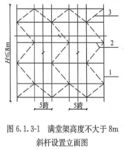
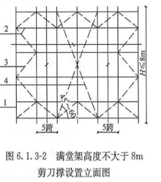
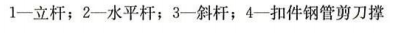

| 中国建筑 项目管理表格 | |||||||||||||||||||||||||||||||||||||||||||||||||||||||||||||||||||||||||||||||||||||||||||||||||||||||||||||||||||||||||||
分项工程技术交底卡 | 表格编号 | |||||||||||||||||||||||||||||||||||||||||||||||||||||||||||||||||||||||||||||||||||||||||||||||||||||||||||||||||||||||||||
CSCES-PM-0803 | ||||||||||||||||||||||||||||||||||||||||||||||||||||||||||||||||||||||||||||||||||||||||||||||||||||||||||||||||||||||||||||
项目名称及编码 | 平顶山高新区湛南棚户区村庄改造项目B区 | 共 7 页 第 1 页 | ||||||||||||||||||||||||||||||||||||||||||||||||||||||||||||||||||||||||||||||||||||||||||||||||||||||||||||||||||||||||||
楼栋号 |
| 分项工程名称 | 模板工程 | |||||||||||||||||||||||||||||||||||||||||||||||||||||||||||||||||||||||||||||||||||||||||||||||||||||||||||||||||||||||||
分包公司 |
| 负责人 |
| |||||||||||||||||||||||||||||||||||||||||||||||||||||||||||||||||||||||||||||||||||||||||||||||||||||||||||||||||||||||||
一、施工安排架体搭设→梁模板铺设→顶板模板铺设→楼梯模板铺设→墙模板施工→验收 1#、4#、6#、8#楼一层二层层高较高，立杆需要连接。 解决措施：需要连接的立杆，接头位置不能在同一水平面内，同一水平面内相邻立杆连接位置要错开，错开高度不宜小于75mm。 3、物资配置计划
二、模板设计1板模板根据本工程特点，地下室负一层模板在计算时按照3.15m、板厚180mm，负二层及标准层顶板模板按照4.20m高、120mm厚计算。通过计算，两者的模板搭设参数一致，统一为立杆间距纵横向为900mm，水平杆步距1500mm，扫地杆距离地面500mm，板底方木间距200mm布置。 2墙模板1、地下室墙体厚度按照350mm计算，竖楞为间距200mm布置方木，横楞采用双钢管间距500mm布置，横楞距地200mm起步，横楞上对拉螺栓横向间距500mm设置。 2、标准层墙体厚度按照200mm计算，竖楞为间距200mm布置方木，横楞采用双钢管间距500mm布置，横楞距地200mm起步，横楞上对拉螺栓横向间距600mm设置。 3梁模板盘扣式钢管架立柱沿梁跨方向纵向间距900mm，立杆横距600mm，水平杆步距1500mm，通过钢管横梁支撑上部方木小梁根数为3根，间距为梁底宽度三均分、悬挑200mm布置。
三、模板工程施工工艺及施工方法1）模板制作1柱头模板制作 矩形柱模板分4块制作，每块模板由胶合板面板和方木按设计要求用铁钉钉制而成，模板面板的排列从柱上部向下排列.与梁交接处的凹口模板应与下段模板相连接(即取整块板材制作)，便于柱梁节点模板的固定。每只柱4块模板制作完后进行编号。 2墙模板制作 外墙外侧模板：外墙外侧模板配置高度为下部超过施工缝100mm，竖向方木长度为层高(下部立于底板面上)。墙模板分段制作，胶合板面板与方木用铁钉钉制时，模板的竖向拼缝处应设置方木，在各段墙模板组装时，模板的竖向接缝亦应有方木遮盖。墙模板制作完后进行编号。 3.外墙内侧及内墙(剪力墙)模板： 内墙模板的配制高度为各层板底净高度减20mm，即现浇板底模板搁置于墙模板之上。墙模板分段制作(墙体水平长度不长的分块制作)，模板的竖向拼缝处应设置方木，各段墙模板组装时，模板的竖向接缝亦应有方木遮盖。墙模板制作完后进行编号。 4散拼装施工：墙模板也可在现场散拼装，面板、方木材料的主规格尺寸预先按结构模板排列要求进行加工裁锯，现场拼装时，封闭端模板再按实际进行现场裁锯。 5现浇板模板制作 现浇板模板背面楞木排列方向应与钢管支撑架顶部水平杆相垂直，方木应与模板的长边平行并侧立布置.模板长边的拼缝应位于方木之上。现浇板底模板搁置于梁侧模之上。现浇板模板按每间房间平面净尺寸配制。每跨预先制作成一块模板并编上号。对主规格面板材料及方木进行分别裁锯加工，分规格堆放，现场散拼装时取用，端部拼接部分随时配制、安装。 2）模板安装施工程序1板模板安装顺序及技术要点①模板安装顺序 满堂脚手架搭设→主龙骨（钢管）安装调整→次龙骨（木方）安装→柱头、梁头模板龙骨→柱头、梁头模板、顶板模板安装→拼装→顶板内、外柱头模板龙骨→模板调整验收→进行下道工序 ②技术要点 楼板模板当采用单块就位时，宜以每个铺设单元从四周先用模板与柱模板连接，然后向中央铺设，跨度大于4m时，起拱高度宜为跨度的1/1000-3/1000，起拱部位为中间起拱，四周不起拱。 2柱模板安装工艺（1）工艺流程：检查柱位置墨线→焊限应钢筋→安装柱模板→安装柱箍→校正固定→质量检查。 （2）施工要点 1）控制好柱子标高，在柱四边离地5～8cm处的主筋上按位置线焊制钢筋限位，从四面顶住模板，以保证柱轴线边线与标高的准确。 2）柱头模板安装前，应清除施工缝处动石子，并清理干净。 3）通排柱，应先安装两端柱，经校正、固定、拉通线校正中间各柱。柱箍设置间距应符合设计要求。 4） 柱头模板安装后，利用柱模四边的钢管排架立杆，对柱模进行校正和固定。 3墙模板安装工艺（1）工艺流程：检查墙位置墨线→安装就位→侧墙模板(或现场组拼后安装) →钻对拉螺杆孔并装上穿墙螺杆和内套管→安装另一侧墙模板→钻对拉螺杆孔并对上穿墙螺杆→检查(或调整竖向内楞木间距) →装水平双钢管外楞，临时固定穿墙螺杆→检查、调整模板垂直度，安装支撑叶紧固穿墙螺杆螺帽叶安装门窗洞侧边模板→质量检查。 （2）施工要点 1）按墙位置线安装就位一侧墙模板，安装临时拉杆或斜撑固定，钻对拉螺杆孔，安装塑料套管和穿墙螺栓，穿墙螺栓规格和间距应符合模板设计要求。 2）清扫墙内杂物，再安装就位另一侧模板，钻对拉螺杆孔，对上并穿上对拉螺杆。安装两侧模板的水平积钢管外楞，用对拉螺杆配3型扣件或锕压板将水平钢管外楞固定。 3）检查、校正模板垂直度。墙模板安装完毕，检查一遍对拉螺栓是否紧固，模板拼缝及下口是否严密，办完预检手续。 3模板拆除（1）结构层模板拆除顺序：墙(柱)侧模板→现浇板模板及部分支撑→承重排架。 （2）墙(柱)模板拆除时，混凝土强度应能保证其表面及楞角不因拆除模板受损时方可拆除。 （3）承重的板底模板拆除时，以同条件养护的混凝土试块强度作为模板拆除的强度依据，底模板拆除时混凝土强度要求见下表：底模拆除时的混凝土强度要求
（4）模板拆除作业，应有项目技术负责人(或施工员)下达的模板拆除令后，方可按规定要求实施模板拆除作业。 （5）内墙模板拆除时，先将房间内现浇板钢管排架的扫地杆拆除，此时排架立杆上还有两道水平杆，不影响支撑架的稳定。扫地杆拆除后，再拆砼墙侧模，便于模板的运输。 （6）现浇板模板拆除前，先将间隔拆除部分立杆，再将支撑上部的支承横杆与立杆的连接扣松动，将支承横杆下降150mm～200mm，然后拆除方木搁栅，撬松现浇板模板，使模板下落到钢管支架上，运下模板后将其余钢管支架拆除。注意：虽然砼达到拆模强度，但该强度尚不能承受上部施工荷裁时，必须经过核算，加临时支撑。 四、质量验收标准1）基本规定1、模板及其支架应根据工程结构形式、荷载大小、地基土类别、施工设备和材料供应等条件进行设计。模板及其支架应具有足够的承载能力、刚度和稳定性，能可靠地承受浇筑混凝土的重量、侧压力以及施工荷载。 2、在浇筑混凝土之前，应对模板工程进行验收。 3、模板安装和浇筑混凝土时，应对模板及其支架进行观察和维护。发生异常情况时，应按施工技术方案及时进行处理。 4、模板及其支架拆除的顺序及安全措施应按施工技术方案执行。 2）模板安装1、安装现浇结构的上层模板及其支架时，下层楼板应具有承受上层荷载的承载能力，或加设支架；上、下层支架的立柱应对准，并铺设垫板。 检查数量：全数检查。 检验方法：对照模板设计文件和施工技术方案观察。 2、在涂刷模板隔离剂时，不得沾污钢筋和混凝土接槎处。 检查数量：全数检查。 检验方法：观察。 3、模板安装应满足下列要求： 1）模板的接缝不应漏浆；在浇筑混凝土前，木模板应浇水湿润，但模板内不应有积水； 2）模板与混凝土的接触面应清理干净并涂刷隔离剂，但不得采用影响结构性能或妨碍装饰工程施工的隔离剂； 3）浇筑混凝土前，模板内的杂物应清理干净； 检查数量：全数检查。 检验方法：观察。 4、对跨度不小于4m的现浇钢筋混凝土板，其模板应按设计要求起拱；当设计无具体要求时，起拱高度宜为跨度的1/1000~3/1000。 检查数量：在同一检验批内，对板，应按有代表性的自然间抽查10%，且不少于3间；对大空间结构，板可按纵、横轴线划分检查面，抽查10%，且不少于3面。 检验方法：水准仪或拉线、钢尺检查。 5、固定在模板上的预埋件、预留孔和预留洞均不得遗漏，且应安装牢固，其偏差应符合表8-79的规定。 检查数量：在同一检验批内，对柱和基础，应抽查构件数量的10%，且不少于3件；对墙和板，应按有代表性的自然间抽查10%，且不少于3间；对大空间结构，墙可按相邻轴线间高度5m左右划分检查面，板可按纵横轴线划分检查面，抽查10%，且均不少于3面。 检验方法：钢尺检查。
注：检查中心线位置时，应沿纵、横两个方向量测，并取其中的较大值。 6、现浇结构模板安装的偏差应符合下表的规定。 检查数量：在同一检验批内，对柱和基础，应抽查构件数量的10%，且不少于3件；对墙和板，应按有代表性的自然间抽查10%，且不少于3间；对大空间结构，墙可按相邻轴线间高度5m左右划分检查面，板可按纵、横轴线划分检查面，抽查10%，且均不少于3面。
注：检查轴线位置时，应沿纵、横两个方向量测，并取其中的较大值。 五、室内满堂脚手架的施工1、参数要求：立杆纵横、水平杆步距、水平扫地杆的设置要严格按照第五节的要求施工，满足上部荷载要求。 2、基本要求：横平竖直、整齐清晰、连接牢固、有安全操作空间、不变形、不摇晃。 3、模板支架搭设应根据立杆放置可调底座，应按照先立杆后水平杆再斜杆的顺序搭设，形成基本的架体单元，应以此扩展搭设成整体支架体系。 4、垫板应平整、无翘曲，不得采用已开裂垫板，垫板尺寸为100mm*100mm*50mm。 5、立杆应通过立杆连接套管连接，在同一水平高度内相邻立杆连接套管接头的位置宜错开，且错开高度不宜小于75mm。 6、水平杆扣接头与连接盘的插销应用铁锤击紧至规定插入深度的刻度线。 7、每搭完一步支模架后，应及时校正水平杆歩距，立杆的纵横距，立杆的垂直度偏差和水平杆的水平偏差。立杆的垂直度偏差不应大于模板支架总高度的1/500，且不得大于50mm。 8、在多层楼板上连续设置模板支架时，应保证上下层支撑立杆在同一轴线上。 9、支架拆除作业时，应遵循先搭后拆，后搭先拆的原则，从顶层开始，逐层向下进行，严禁上下层同时拆除，严禁抛掷。 10、支架架体四周外立面向内的第一跨每层均应设置竖向斜杆，架体整体底层以及顶层均应设置竖向斜杆，并应在架体内部区域每隔5跨由底至顶纵横向均设置竖向斜杆（如图6.1.3-1）或采用扣件钢管搭设的剪刀撑（如图6.1.3-2）当架体高度不超过4个歩距时，可不设置顶层水平杆。   11、可调托座顶丝外露长度严禁超过400mm，插入立杆的长度不得低于150mm，可调底座可调丝杆外露长度不得大于300mm。 12、架体安装完毕后，要进行全面综合的检查验收，验收通过后方可进行混凝土的浇筑。 六、施工注意事项在模板工程施工过程上中，严格按照模板工程质量验收要求施工，以保证模板工程的施工质量。严格执行交底制度，操作前必须有单项的施工方案和给施工队伍的书面形式的技术交底。 1、胶合板选统一规格，面板平整光洁、防水性能好的； 2、进场木方码放整齐，木方下口要垫平； 3、模板配板后四边弹线刨平，以保证柱子、梁、楼板阳角顺直；楼板底模要包梁侧立面、柱模要包梁底模； 4、柱模板安装基层找平，并用砂浆封堵严密，模板下端与事先做好的定位基准靠紧，以保证模板位置正确和防止模板底部漏浆，在封模前要清理好垃圾； 5、模板的对拉螺栓孔平直相对，穿插螺栓不得斜拉硬顶。穿墙螺栓套硬塑料管，塑料管长度比墙厚少2~3mm。 6、支柱所设的水平撑与剪刀撑，按构造与整体稳定性布置。 7、胶合板选择水性脱模剂，在安装前将脱膜剂刷上，防止过早刷上后被雨水冲洗掉；模板贮存时，其上要有遮蔽，其下垫有垫木。垫木间距要适当，避免模板变形或损伤；装卸模板时轻装轻卸，严禁抛掷，并防止碰撞，损坏模板。周转模板分类清理、堆放；拆下的模板，如发现翘曲，变形，及时进行修理。破损的板面及时进行修补。 8、对进入施工现场的钢管支架构配件检查要有产品标识和产品质量合格证、主要技术参数及产品使用说明书。 9、立杆与基础间应无松动、悬空现象，底座、支垫应符合规定。 10、架体的搭设方法和斜杆、钢管剪刀撑等设置应符合规定。 11、水平杆扣接头与立杆连接盘的插销应击紧至所需插入的标志刻度。 七、质量控制措施1、架体搭设要严格按照方案执行。 2、梁、柱、墙模板上口要拉通线，保证结构顺直，阴阳角方正。 3、顶板模板、梁柱接头、墙板接头、墙柱接头处模板拼缝要严密，必要时要粘贴海绵条。 4、不能在顶板上切割模板及方木，避免锯末沉积在墙根及梁底。 5、卫生间等下沉房间吊模要方正、牢固。 6、模板拆除时要严格按照混凝土规范要求的强度值后再进行拆除。 八、安全技术措施1 安全作业条件（2）木工必须经过工种技术培训，达到规定的技术等级要求。 （3）木工机械操作人员应经过技术培训，考试合格取得机械“操作证”。 （4）作业前进行专项施工方案交底和班前安全技术交底。 （5）木工机械设备经验收合格，安全装置齐全，试运行符合安全要求。 （6）现场的作业环境及安全设施符合安全施工规定要求。 （7）戴好安全帽，扣好帽带，正确使用劳动保护用品。 （8）经医生检查认为不适宜高处作业的人员，不得进行高处作业。 2 安全施工（1）模板制作 1）模板制作前，应检查模板所用材料的规格、质量是否符合模板专项技术方案的规定要求，对质量、规格不符合要求材料的不能使用。 2）作业前应检查所用机械及电源线路是否符合安全要求，所使用的工具是否牢固，手持电动工具的漏电保护器应试机检查，合格后方可使用。 3） 木工机械必须有专人负责，操作人员必须熟悉该机械件能，熟悉操作技术，严禁机械无人负责或随便拆改安全防护装置。 4）使用的工具不得乱放，使用完毕应随时放人工具箱。 5）使用手锯时，锯条必须调紧适度，下班时要放松，以防再使用时锯条突然爆断伤人。 6）成品、半成品、木材应堆放整齐，不得任意乱放，木材码放高度不超过2m为宜，木工机械周围的安全操作空间内禁止堆放材料。 7）木工车间、木库、木料堆场严禁吸烟或动用明火，废料应及时清理归堆，做好落手清.以免发生意外。 （2）模板安装 1）作业前应检查现场防护设施是否符合安全施工要求，不符合安全要求时应采取措施后方可开始作业。 2）作业前应认真检查模板、支撑等构件是否符合要求，模板及支撑材质是否合格。 3）地面上的支模场地必须平整夯实，并同时排除现场的不安全因素。 4）操作人员登高必须走人行梯道，严禁利用模板支撑攀登上下，不得在独立梁及其他高处狭窄而无防护的模板面上行走。 5）二人抬运模板时要互相配合，协同工作。传递模板，工具应用运输工具或绳子系牢后升降，不得乱抛。 6）支撑、牵杠等不得搭在脚手架上。通路中间的斜撑、牵杠等应设在1.8m高以上。模板安装过程中不得间歇，柱头、搭头、立柱顶撑、牵杠等必须安装牢固成整体后，作业人员才允许离开。 7）模板上有预留洞者，应在安装模板的同时将洞口防护好。 8）向基坑内运送模板构件时，严禁抛掷。使用溜槽或起重机械运送，下方操作人员必须远离危险区域。 9）复杂结构模板的安装与拆除，事先应有切实的安全措施。 10）遇六级以上的大风时，应暂停室外的高处作业，雪霜雨后应先清扫施工现场略干不滑时再进行工作。 （3）模板拆除 1）模板承重支架拆除必须有工程负责人的批准手续(拆模令)及同条件养护试块的混凝土的强度报告。 2）拆模的方法应按照后支先拆、先支后拆的顺序；先拆非承重模板，后拆承重的模板及支撑；在拆除顶板模板时，要注意模板掉下，尤其是用定型模板做平台模板时，更要注意，拆模人员要站在门窗洞口外拉支撑，防止模板突然全部掉落伤人。已拆活动的模板，必须一次连续拆除完，方可停歇，严禁留下不安全隐患。 3）当水平支撑超过二道以上时，应先拆除二道以上水平支撑，最下一道大横杆与立杆应同时拆除。 4）模板拆除应按规定逐次进行，不得采用大面积撬落方法。拆除的模板、支撑、连接件应用槽滑下或用绳系下。不得留有悬空模板。 5）拆模作业时，必须设警戒区，严禁下方有人进入。拆模作业人员必须站在平稳牢固可靠的地方，保持自身平衡，不得猛撬，以防失稳坠落。 6）严禁用吊机直接吊除没有撬松动的模板，吊运模板时必须拴结牢固。 7）拆模板时禁止使用方木作脚手板。 8）拆模板时，作业人员要站立在安全地点进行操作，防止上下在同一垂直面工作；操作人员要主动避让吊物，增强自我保护和相互保护的安全意识。 9）拆模必须一次拆清，不得留下无撑模板。拆下的模板要及时清理，堆放整齐。混凝土楼板上的预留孔，应有防护措施，以免操作人员从孔中坠落。 九、疫情防控措施1、服从项目部关于疫情防控的封闭式管理和其它管理； 2、配合项目部卡点测体温、登记等工作； 3、必须佩戴口罩。施工现场所有人员都要做好个人防护措施，必须佩戴口罩。 4、宿舍保持通风换气，尽可能打开门窗通风换气； 5、必须做到垃圾无害化处理，口罩丢弃在专用收集箱； 6、服从项目部安排的分餐、错时用餐安排，自觉在人少时候就餐； 7、避免人群聚集，人与距离保持1m以上； 8、注意个人卫生，加强个人防护，避免感冒、发烧。
| ||||||||||||||||||||||||||||||||||||||||||||||||||||||||||||||||||||||||||||||||||||||||||||||||||||||||||||||||||||||||||||
交底人 |
| 交底日期 |
| |||||||||||||||||||||||||||||||||||||||||||||||||||||||||||||||||||||||||||||||||||||||||||||||||||||||||||||||||||||||||
被交底人 |
| |||||||||||||||||||||||||||||||||||||||||||||||||||||||||||||||||||||||||||||||||||||||||||||||||||||||||||||||||||||||||||